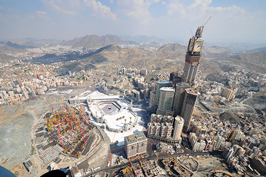

Introduction
The Abraj Al-Bait Towers, also known as the Mecca Royal Hotel Clock Tower, is a building complex in Mecca, Saudi Arabia. These towers are a part of the King Abdulaziz Endowment Project that strives to modernize the holy city in catering to the pilgrims. The complex holds several world records, the tallest clock tower in the world, the world's largest clock face and the building with the world's largest floor area. The complex's hotel tower became the second tallest building in the world in 2012, surpassing Taiwan's Taipei 101 and surpassed only by Dubai's Burj Khalifa. The building complex is metres away from the world's largest mosque and Islam's most sacred site, the Masjid al Haram. The developer and contractor of the complex is the Saudi Binladin Group, the Kingdom's largest construction company.
The complex was built after the demolition of the Ajyad Fortress, the 18th century Ottoman citadel which stood atop a hill overlooking the Grand Mosque. The destruction of the fort in 2002 by the Saudi government sparked Turkish and international outcry.
Description
The tallest tower in the complex stands as the tallest building in Saudi Arabia, with a height of 601 metres (1,972 feet). Currently it is the second tallest building in the world, surpassing Taipei 101 in Taipei, Taiwan. The structure has surpassed Dubai International Airport in having the largest floor area of any structure in the world with 1,500,000 m2 (16,150,000 sq ft) of floorspace.
The site of the complex is located across the street to the south from an entrance to the Masjid al Haram mosque, which houses the Kaaba. To accommodate worshipers visiting the Kaaba, the Abraj Al-Bait Towers has a large prayer room capable of holding more than 10,000 people. The tallest tower in the complex also contains a five-star hotel, operated by Fairmont Hotels and Resorts, to help provide lodging for the millions of pilgrims that travel to Mecca annually to participate in the Hajj. In addition, the Abraj Al-Bait Towers has a 20 storey shopping mall (the Abraj Al Bait Mall) and a parking garage capable of holding over a thousand vehicles. Residential towers house permanent residents while two heliports and a conference center are to accommodate business travelers. In total, up to 100,000 people could be housed inside the towers.[citation needed] The project uses clock faces for each side of the hotel tower. The highest residential floor stands at 450 metres (1,480 feet), just below the spires. The clock faces are 43 m × 43 m (141 ft × 141 ft), the largest in the world. The roof of the clocks is 530 metres (1,740 feet) above the ground, making them the world's most elevated architectural clocks. A 71-metre-tall spire (233 ft) has been added on top of the clock giving it a total height of 601 metres (1,972 feet), which makes it the second tallest building in the world, surpassing Taipei 101 in Taiwan. The tower also includes an Islamic Museum and a Lunar Observation Center which will also be used to sight the moon during the Holy Months.
The building was planned to be 734 metres tall in 2006. In 2009, it was published that the final height will be 601 metres. The complex was built by the Saudi Binladin Group, Saudi Arabia's largest construction company. The clock tower was designed by the Islamic German architect Bodo Rasch and his firm SL Rasch GmbH . The facade was constructed by Premiere Composite Technologies, the clock by German tower clock manufacturer PERROT GmbH & Co. KG Turmuhren und Läuteanlagen . According to the Saudi Ministry of Religious Endowments, the project cost US$15 billion.
| Tower | Height (m) | Floors | Completion |
|---|---|---|---|
| Hotel Tower | 601 | 120 | 2012 |
| Hajar | 260 | 48 | 2011 |
| ZamZam | 260 | 48 | 2011 |
| Maqam | 250 | 45 | 2012 |
| Qibla | 250 | 45 | 2011 |
| Marwah | 240 | 42 | 2008 |
| Safa | 240 | 42 | 2007 |
Features
The building is topped by a four-faced clock, visible from 25 kilometres (16 miles) away. The clock is the largest in the world and is 400 meters above the ground. The clock dwarfs London's Big Ben, once the largest four-faced clock in the world, and the previous holder of that title, the Allen-Bradley Clock Tower in Milwaukee, Wisconsin. The clock's face is also bigger than the previous record holder as the largest clock face in the world, the Cevahir Mall clock in Istanbul. Each of the clock's four faces measure 46 m (151 ft) in diameter and are illuminated by 2 million LED lights, with four oriented edges, just above the clock alongside huge Arabic script reading: “God is the Greatest” on the north and south faces and on the west and east the Koran. Four golden domes on pillars on all the corners are also present. Another 21,000 white and green colored lights, the same as the Saudi Flag, fitted at the top of the clock, will flash to signal Islam's five-times daily prayers, and will be visible as far as 30 km (19 mi) away. On special occasions such as new year, 16 bands of vertical lights will shoot some 10 kilometres (6.2 miles) up into the sky. The clock's four faces will be covered with 98 million pieces of glass mosaics. The Saudi coat of arms is displayed at the center of each clock behind the dials. The minute hand is 22 m (72 ft) long, while the hour hand is 17 m (56 ft) long.
An observatory deck is at the base of the clock. Elevators take visitors up to an observation balcony just beneath the clock faces.
There were rumours that the clock would be set to local Mecca Time, in an attempt to replace Greenwich as the prime meridian for global time keeping, but the clock is set to Arabia Standard Time (UTC+03:00).
The clock tower is topped by a 93 m (305 ft) spire with 23 m (75 ft) high golden crescent at the top. The spire has the black observation pod at the bottom which contains a lunar gallery, a control tower and the main observation deck.
The crescent was constructed in Dubai by Premier Composite Technology in April 2011. The crescent is made of fiberglass-backed mosaic gold, and it weighs up to 35 tonnes. Peugeot Joseph, the company official, said a team of five engineers and a hundred workers carried out the project, which cost 90 million United Arab Emirates dirham, and it took three months to build it. The company has also constructed the Mecca Clock. The Crescent was divided into 10 parts to move it to Mecca.[10] The crescent was partly assembled on the base of the clock-face to reduce it to 5 parts. Those five parts were then lifted and installed above the spire from 20 June to 6 July 2011.
The minaret and its base have massive loudspeakers that will emit prayer calls to a distance of seven km while nearly 21,000 lamps will illuminate the surrounding area to a distance of 30 km. During occasions like Muslim Eids and new Hijri years, a 16-beam light will illuminate an area of a diameter of around 10 km while 21,000 lamps will beam white and green lights to a distance of 30 km. The light beams are intended to allow deaf persons or Muslims in far areas to know prayer timings in the western parts of Mecca and nearby cities. Yet, despite the claimed need for illumination and awareness of prayer timings in discrete areas and portions around and in Mecca, there are well over 200 existing old mosques in the city; most are frequently attended and therefore well equipped with Muadhins to call the prayer.